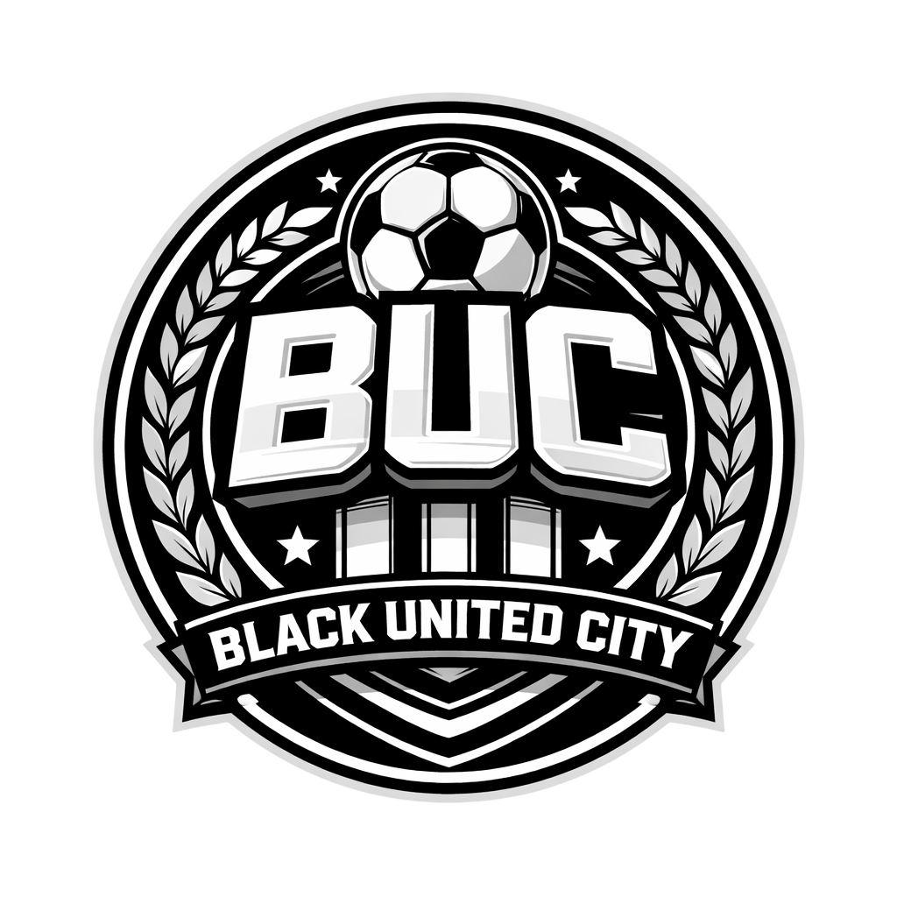
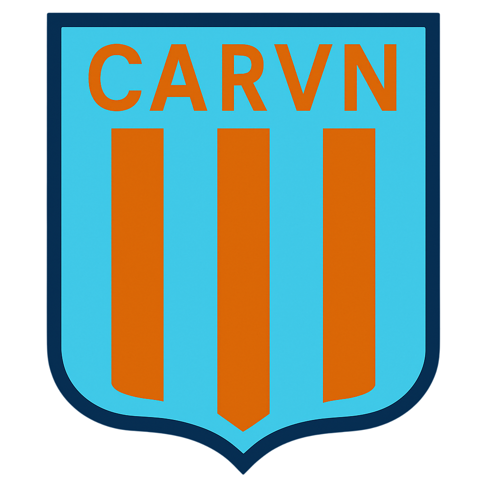
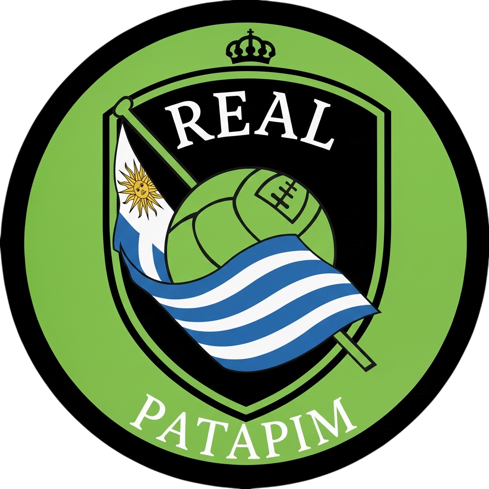

Grupo A
| Pos | Equipo | PJ | Pts |
|---|---|---|---|
| 1 |  Carita F.C. Carita F.C. |
0 | 0 |
| 2 |  Atlético Botella Atlético Botella |
0 | 0 |
| 3 |  Guris HC Guris HC |
0 | 0 |
| 4 | Atlético San José | 0 | 0 |
Grupo B
| Pos | Equipo | PJ | Pts |
|---|---|---|---|
| 1 |  General Paz Juniors General Paz Juniors |
0 | 0 |
| 2 |  Imperio F.C. Imperio F.C. |
0 | 0 |
| 3 | Black United City | 0 | 0 |
| 4 | Racing VN | 0 | 0 |
Grupo C
| Pos | Equipo | PJ | Pts |
|---|---|---|---|
| 1 | Real Patapim | 0 | 0 |
| 2 | Sacachispas | 0 | 0 |
| 3 |  Nueva Chicago Nueva Chicago |
0 | 0 |
| 4 |  Vélez Sarsfield Vélez Sarsfield |
0 | 0 |
Grupo D
| Pos | Equipo | PJ | Pts |
|---|---|---|---|
| 1 | Carita F.C. |
0 | 0 |
| 2 | Imperio F.C. |
0 | 0 |
| 3 | Guris HC |
0 | 0 |
| 4 | Racing VN | 0 | 0 |